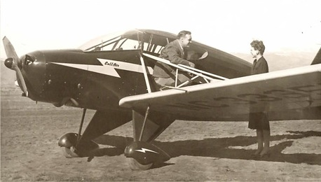
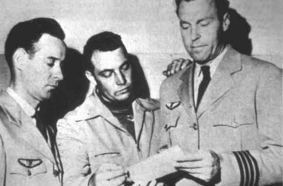

Il fait ses études à Minot (Dakota du Nord). Intéressé par l'athlétisme, was all-state end
. Il fait du football américain sous Bernie Bierman, mais est interrompu par une blessure au
genou. Il est Employé par Red Comet, Inc., qui fabrique des appareillages automatiques de lutte
contre le feu, . il crée la Great Western Fire Control Supply, une
société d'appareillages anti-incendie. Il manipule, distribue, installe des équipements de lutte contre le feu dans 5
états. Utilise son avion dans son travail, atterrissant dans les pâturages et près de montagne. Il est marié et a 2
enfants.
Observation

Arnold et sa femme à côté de son avion tri-places Callair A-3
Comme beaucoup de témoins, Arnold va s'engager lui-même dans l'étude des ovnis. Le , il est
dépêché pour enquêter sur l'affaire de l'île Maury
par un ami journaliste. Cette affaire est survenue , quelques jours seulement avant sa propre
observation. Il se rend à Tacoma pour s'entretenir avec Fred Lee Crisman.
, Arnold voit les fragments de l'observation de Maury Island, comparés à des scories, mâchefer, mais pas les
négatifs des photos égarées. Il appele le lieutenant Frank Brown, un officier de renseignements de la base de
l'Armée de l'Air d'Hamilton (Californie), pour lui demander de se joindre à l'enquête. Brown et un certain capitaine
Davidson, tous deux du département G-2, prennent la route dans l'heure même.
Ils s'entretiennent l'après-midi avec Crisman dans la chambre d'hôtel d'Arnold. Brown dit qu'il doit retourner en
Californie dans la nuit et ne peut donc visiter l'île. Mais il remplit un large carton de kilos de fragments
métalliques avant de partir.
Le copilote Ralph Stevens, Arnold et Emil J. Smith

, tôt le matin, Crisman est au téléphone avec Arnold. Le B-25 où se trouvaient Brown et
Davidson s'est écrasé près de Kelso. Tous 2 sont morts. L'un des moteurs de l'avion a pris feu
après l'envol. Les fragments transportés ne sont pas retrouvés. Arnold organise une expédition à Maury Island en
compagnie de Crisman et Dahl, mais il s'avère que le moteur de leur bateau rend l'âme. Crisman promet de rappeler
Arnold dès que le problème serait résolu. Il ne le fera jamais. Et ne rendra pas non plus les photographies. Il est devenu introuvable — d'après Dahl, il a
quitté la ville pour affaires ; d'après d'autres sources, il a été vu pour la dernière fois montant à bord d'un
avion militaire en partance pour l'Alaska. Puis le fils de Dahl disparaît à son tour. De plus, il semble que quelque
ait truffé de micros la chambre d'hôtel d'Arnold, transmettant aux journaux locaux les détails de ses conversations,
même celles qu'il eut seul avec Brown et Davidson. Il contacte un autre officier de renseignements, un certain major
Sanders, qui lui fait obstruction. Arnold, désormais profondément ébranlé, quitte la ville. Explication officielle :
canular monté par les gardes-côtes pour se faire de la publicité. Cependant, ils ne sont pas poursuivis.
, Arnold est présenté au capitaine Smith, qui vient de faire une
observation avec son co-pilote la veille. Ils s'entendent bien et deviennent bons amis. Arnold demande à Smith de l'aider dans son enquête sur Maury
Island. Ce dernier se déclare heureux d'apporter son aide, et Arnold se rend à Seattle pour l'emmener à Tacoma.
Publications
Arnold
Arnold publie son témoignage dans un article Arnold, K. E.: "I
Did See the Flying Disks", Fate magazine, Printemps 1948.
Cependant ( ?) il refuse une offre de 50000 $ de Doubleday pour publier ses
souvenirs, l'éditeur obligeant à utiliser un "nègre" alors qu'Arnold souhaite raconter son aventure avec ses propres
mots. Des offres pour des droits cinématographiques sont également déclinées, Arnold comprenant que les événements
seraient "dramatisés" au lieu d'être retranscrits fidèlement sur la pellicule. Il finit toutefois par publier son
témoignage dans des petits livres à compte d'auteur Arnold, K. E. The Flying Saucer
as I Saw it, booklet, publié à compte d'auteur, 1950Arnold, K. E.: The
Coming of the Saucers - A Documentary Report on Sky Objects That Have Mystified the
World avec Raymond A. Palmer, publié à compte d'auteur, , Boise, Idaho; Amherst, Wisconsin — Il y est notamment question de l'affaire
de l'île Maury.
Politique
Arnold félicité de sa nomination comme candidat au poste de gouverneur de l'Idaho par Dwight David Eisenhower en 1962
, Arnold est nominé pour être lieutenant gouverneur républicain de l'Idaho. Il est félicité par
l'ancien président Eisenhower (ci-contre).
toujours captivé par le sujet des ovnis, et après avoir mené toute sa vie des enquêtes sur le terrain.